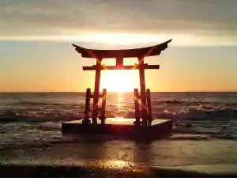
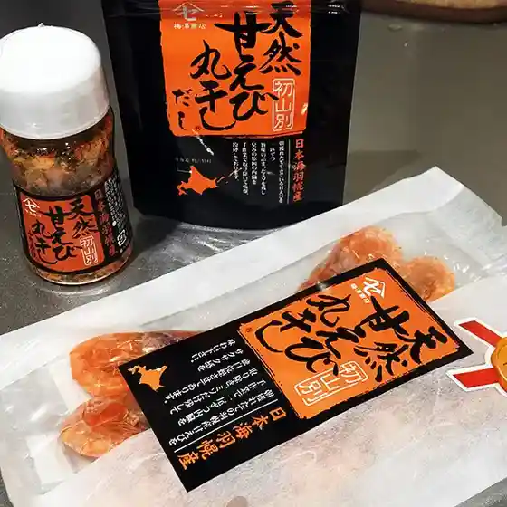
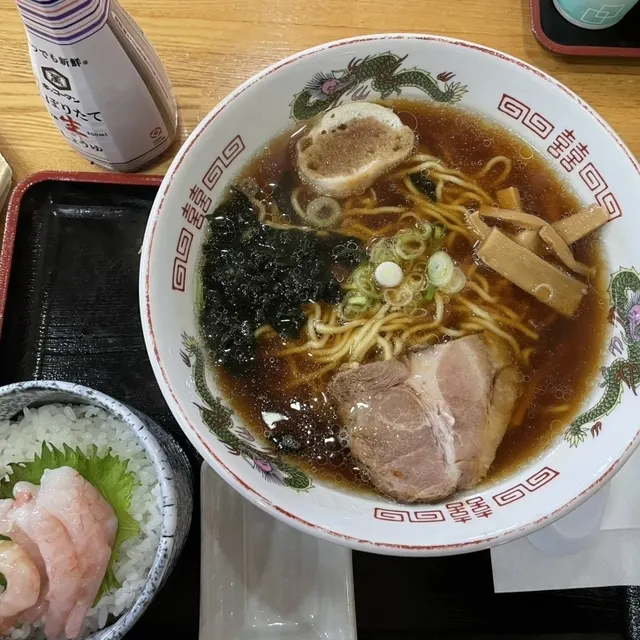
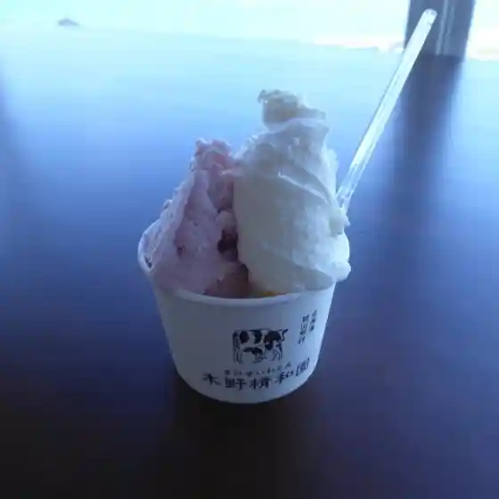
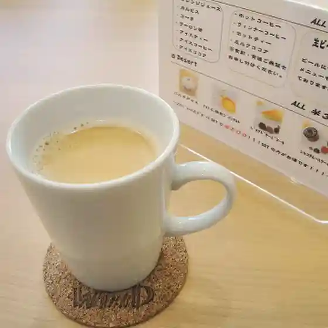
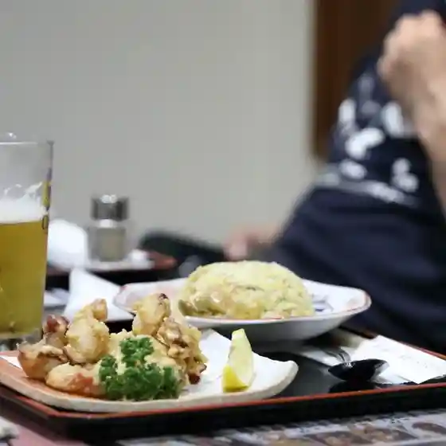

Japan / Hokkaido / Shosanbetsu
Shosanbetsu
Shosanbetsu · Hokkaido
Shosanbetsu
Highlighted on the Hokkaido map.
Stay
しょさんべつ温泉 岬の湯

Shosanbetsu Onsen Misaki No Yu
Dining
しょさんべつ温泉 ホテル 岬の湯
Shosanbetsu Onsen Hoteru Misaki No Yu
梅澤商店

Umesawa Shouten
道の駅 ロマン街道 しょさんべつ

Michi No Eki Roman Kaidou Shosanbetsu
北極星
Hokkyokusei
木野精和園

Kino Sei Wa Sono
まるてん食堂
Maruten Shokudou
カフェテイルウインド

Kafeteiruuindo
花みさき

Hana Misaki
セイコーマート 初山別店
Seikoomaato Shosanbetsu Mise
Sights
Konpira Shrine
Konpira Shrine
Shosambetsu Tenmondai
Shosambetsu Tenmondai